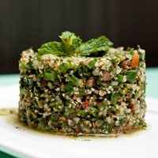

Not only is our food good, it's also good-looking! Our patrons often stop to admire our fare with a quick Instagram before digging in. We've collected a few of our favorite shots here.
We start our day at the crack of dawn to bake our own muffins, bread, and dinner rolls. Loaves not used that day are donated to the local food shelter.

People come from all over to enjoy our lovingly made burgers. We grind our own locally-sourced organic beef and turkey so you know it's fresh and free from fillers and other nonsense. Go for one of our creative topping combos or stick with the classics.

Our chef works with local fisherman to pick the freshest the sea has to offer for our daily seafood special. Our Roast Cod Caponata with Roasted Potatoes is an old favorite with our regulars.

Our fries are cut fresh every day and fried in duck fat for a richer flavor than anywhere else. Since we fry to order, feel free to ask about using vegetable shortening instead.

No restaurant is caught without the staple and classic: fried chicken. Our chicken is battered and fried fresh per order and comes with our famous fries.

We also offer some food found in other parts of the world. One of which is our tabouleh, a Mediterranean salad made of finely chopped fresh vegetables.